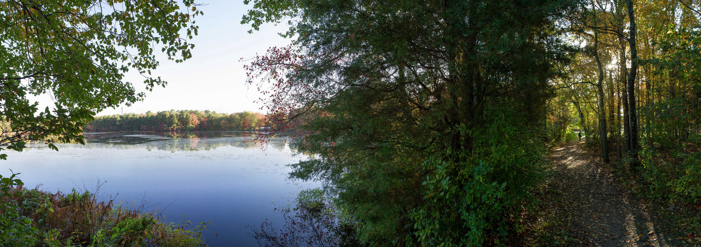

About Stockton

Students (Fall 2014)
- 8,570 full- and part-time undergraduate and graduate students
- 1,186 first-time freshmen
- 1,063 new transfer students
Academic Degrees
- Degrees offered: BA, BS, BFA (Bachelor of Fine Arts), MA, MS, MBA, DPT (Doctor of Physical Therapy)
Faculty
- Noted for our distinguished faculty, including Stephen Dunn, winner of the 2001 Pulitzer Prize for Poetry, and Wendel A. White, awarded a Guggenheim Fellowship in 2003
- 96% of our professors hold the highest degree in their field
- Faculty data
Facilities
- Campus Center
- Campus-wide wireless network
- Carnegie Center, Atlantic City
- Coastal Research Center
- Dante Hall Theater
- Emergency messaging systems
- Health Sciences Speech and Hearing Clinic
- Kramer Hall (Hammonton Instructional Site)
- Manahawkin Instructional Site
- Marine Science and Environmental Field Station
- Noyes Museum of Art of The Richard Stockton College of New Jersey, Oceanville and Hammonton
- On-campus child care facilities (Free To Be)
- On-campus outdoor research lab: 400 acres, including fields and lakes
- Performing Arts Center
- Sam Azeez Museum of Woodbine Heritage (Woodbine Instructional Site)
- Seaview Resort
- Southern Regional Institute & Educational Technology Training Center
(SRI & ETTC) - Sports Center
- Two-thousand-acre campus in the New Jersey Pinelands National Reserve
- Unified Science Center
Special Recognition
- Ranked once again in the top tier of the Best Regional Colleges and Universities of the North (America's Best Colleges for 2015) by U.S. News and World Report, Stockton is among this category's top-10 public institutions. (Read Press Release.)
- Ranked among the "Best in the Northeast" by the Princeton Review.
- Environmental Studies and Marine Science programs were selected by Peterson's Guides and the Alliance for Environmental Education for inclusion in Education for the Earth: A Guide to Top Environmental Studies Programs.
- The Sara & Sam Schoffer Holocaust Research Center fosters research in holocaust studies to honor victims and survivors of the Holocaust, and to educate present and future generations in understanding racism, anti-Semitism, hatred and oppression.
Stockton College is conveniently located just minutes from shore resorts, one hour from Philadelphia, and two hours from New York City!